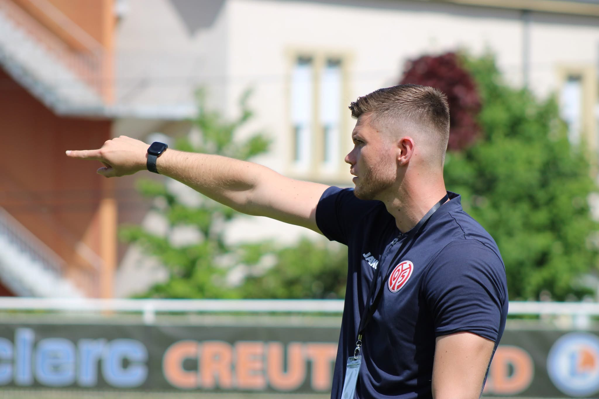

Der Anfang
Warum gründe ich nach 3 Jahren im NLZ von Mainz 05 meine eigene Fußballakademie?
Nach Jahren im Nachwuchsleistungszentrum und der täglichen Arbeit mit jungen Spielern entstand der Wunsch, noch zielgerichteter auf den einzelnen Spieler eingehen zu können.
Aus dieser Überzeugung ist die Frey Football Academy entstanden.